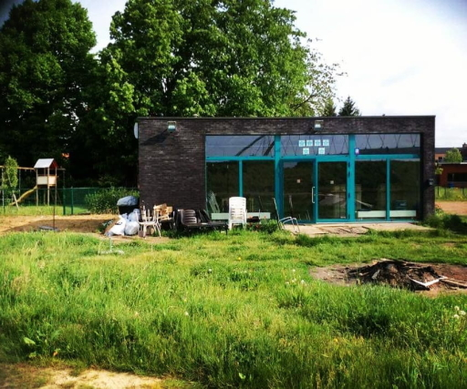

JH Basta
For 2 years I was part of management for a local youth center, the organization already existed for many years, just without its own building. In those 2 years we were able to build what is probably the smallest, but still fully equipped, youth center in the country. Now that we had a full bar and toilets we were able to organize events at a much higher rate and lower cost. To this day JH Basta is still going strong.

Euronav
During my last year of high school, I had to do a short 2-week internship. This is where I first started working at Euronav. After the internship I started working for them during summer until after a few years they offered me a full-time job. During my time with them I gathered experience on many aspects of both IT and international corporations. Ranging from setting up a new server in a rack, writing automated reports with data form a SQL server, working with a backup to tape system, to installing a complete network on large vessels. And cable management...